0x00 前言
书接前文《Switch 使用 DBI 安装免费游戏笔记》我们提到，可以通过安装 RetroArch 万能模拟器，Switch 就能畅玩许多复古的童年大作：
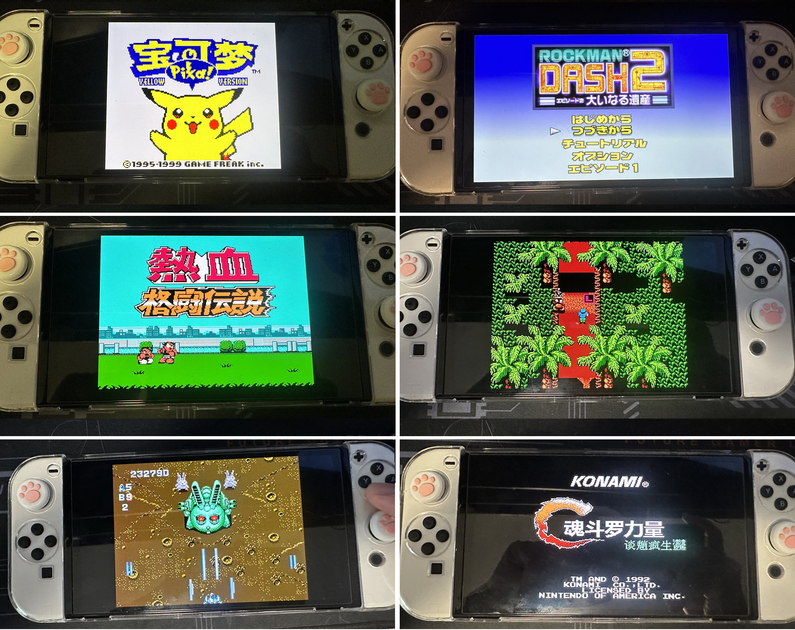
RetroArch（下文简称 RA）是一个开源的多平台模拟器。
几乎所有能运行程序的设备都能安装 RetroArch：
- 桌面系统： Windows 系列、macOS 系列、Linux 系列
- 移动设备： Android（含电视、掌机）、iOS、iPad
- 游戏主机： 任天堂系列、PS 系列、Xbox 系列、SEGA 系列
- 其他平台： Steam、浏览器、单片机
同时它支持上百种核心，几乎覆盖所有八十年代到千禧年间的复古游戏系统：
- 任天堂系列核心：小霸王/FC/NES、GB/GBC、GBA、NDS、3DS、Switch
- SEGA 系列核心：Master System、Mega Drive、Saturn、Dreamcast
- 索尼系列核心： PS1、PS2、PSP（PPSSPP）
- Xbox 系列核心： xemu
- 街机系列核心： MAME、FBNeo、Capcom CPS、Neo Geo
它唯一的缺点是定制化过于灵活，且官方说明文档又极其艰涩复杂、甚至一般玩家可能都看不懂。
如何配置出一台适合自己的 RA ？很多时候，老玩家以为都知道就懒得说；新入坑的玩家不知道又找不到。
我为了在 Switch 折腾一个 RA，几乎花了一周时间才逐渐摸清了入门的门道，特此尽可能把细节记录下来分享给大家参考。
如果有些地方没有记录，说明我也不知道。
0x10 版本与下载
要安装 RA 到 Switch 上，首先 Switch 得是大气层双系统。
截至 2025-11-01，最新版本为：
- Switch:
20.5.0|AMS 1.9.5|E - RetroArch:
1.21.0
如果你的 Switch 大气层版本比较旧又不想升级，需要去官网自行找到 RA 适用的 Switch 版本。
但无论是什么版本，都建议只在官网下载，好多所谓的整合包版本都很古早了，而且大多是东抄西抄的缝合怪，有 rom 没核心的情况特别普遍，如果你不了解版本是否兼容，安装后 Switch 不一定能打开，甚至会触发系统崩溃：
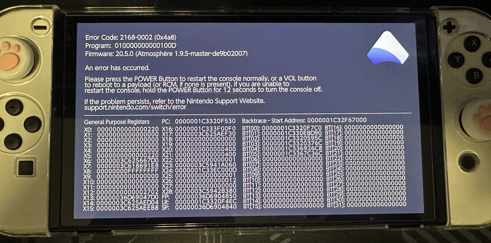
当然如果你想升级大气层，也可以参考《Switch 大气层与系统版本升级笔记》
这里提供一下 RA 官网的下载入口。
首先在 https://www.retroarch.com/?page=platforms 找到安装在 switch 平台的版本：
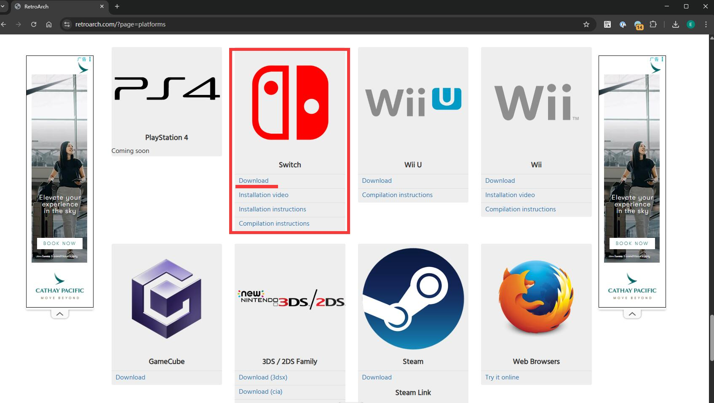
下载解压后你会得到最新版的纯净 RA ，这里下载的是最新的 1.21.0 版本，解压后只有 3 个目录/文件 ：
retroarch: RA 主体目录switch: 里面只有一个retroarch_switch.nro启动文件retroarch.jpg: Logo 图片
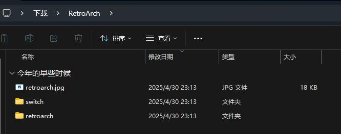
0x20 安装
安装非常简单，使用数据线或读卡器，把这 3 个目录/文件全部复制到 SD 卡的根目录即可：
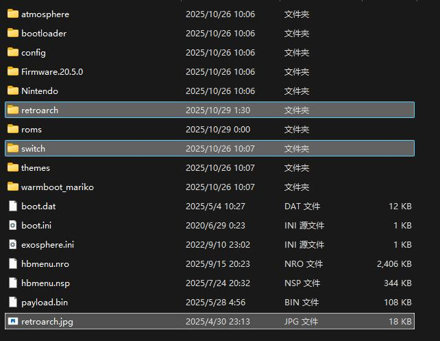
0x30 启动
0x31 NRO: 官方提供的标准方法
其实从安装文件可知，RA 官方只提供了 retroarch_switch.nro 启动文件，且官网也已经声明了仅提供 通过 Title Takeover 标题接管 （即 NRO）的启动方式。
所以安装后，在主界面的游戏列表是看不到 RA 的。
NRO 的启动方法虽然很麻烦，但是必须得知道，启动步骤如下 ——
首先切换到主界面：
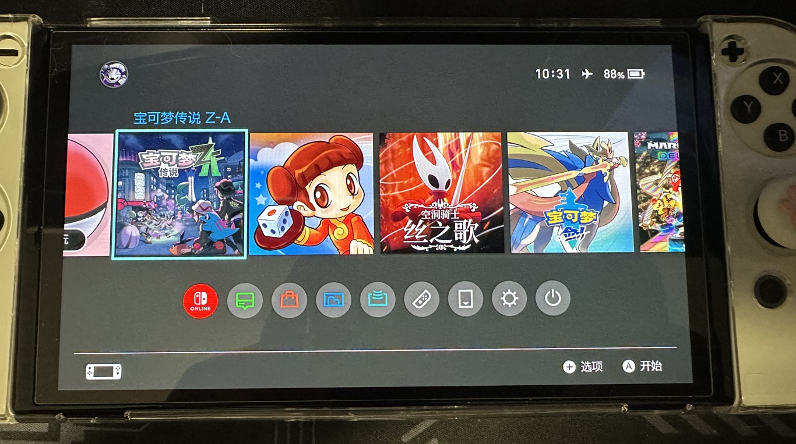
按住 R 键不放，选择任意游戏、并按下 A 键。
此时如果出现用户选择列表，也不要松开 R 键，选择任意用户、并再次按下 A 键。
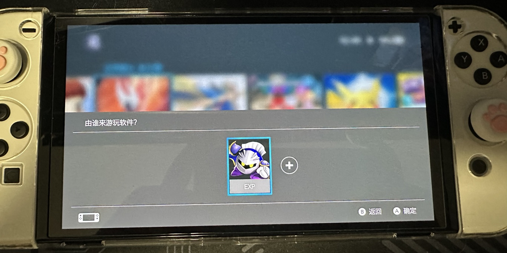
只要 R 键没有松开过，此时不是进入游戏，而是会打开相册：
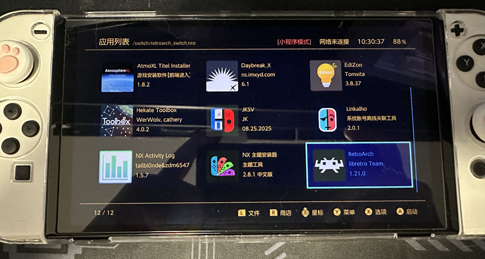
此时可以松开 R 键了，在相册里面找到 Retroarch，直接按 A 键就可以真正打开 RA ：
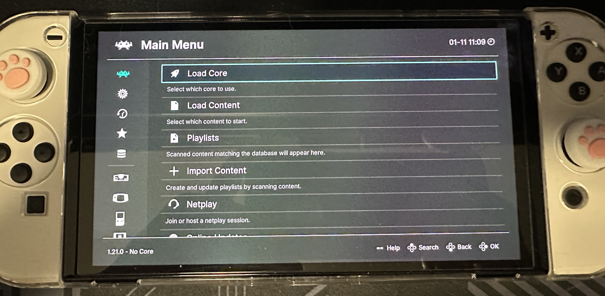
千万注意：不要直接进入相册运行 Retroarch，否则系统会崩溃的：
0x32 NSP: 社区提供的快捷方法
不难发现，NRO 的启动方法非常麻烦，那为什么官方依然不愿提供主菜单可以直接启动的快捷方式呢 ？
在 Reddit 社区 有人问过类似的问题，虽然官方未作出正式回应，但推测原因是：提供 NSP 意味着要像 “完整安装包” 那样发布，此种格式易被用于未授权分发或游戏破解场景，官方可能出于规避法律风险考虑而不提供 NSP。
不过，官网也提到了 “玩家可以使用 NRO 制作自己的 Forwarder NSP”。
而所谓的 Forwarder NSP 实际上只是一个“快捷方式”，内部还是调用原来的 .nro，但是这个快捷方式是通过 NSP 安装的，所以可以像正规游戏一样出现在主界面，点图标即可运行。
社区提供了一个 在线版的 Forwarder NSP 转换工具，不仅支持其他游戏的 .nro 通用转换，甚至针对 RA 的 .nro 专门提供了一个转换入口：
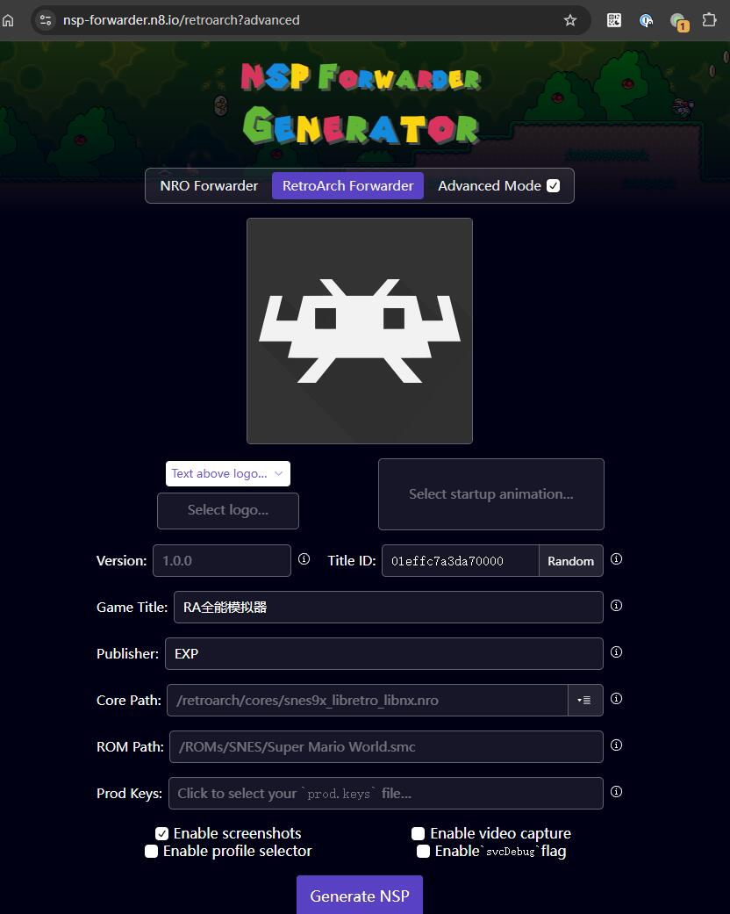
但是这个工具的使用不在本文的讨论范围中，有兴趣可以自行搜索。
这里直接提供一个从 RetroArch 1.21.0 的 NRO 转换得到的 NSP 文件：
点击下载: retroarch.1.21.0.nsp.zip （仅适用 RA 1.21.0 版本，其他版本可能会引起系统崩溃）
下载解压后，可以得到 retroarch.nsp，连接数据线后，通过 DBI/MTP 安装即可。
至于NSP 的具体安装方法可参考《Switch 使用 DBI 安装免费游戏笔记》，此处就不重复赘述了。
安装完成后，主界面会出现 RA 的启动入口 “万能模拟器”：
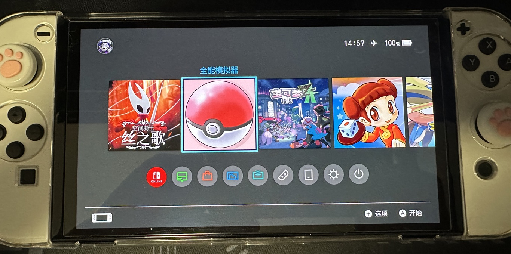
直接运行它即可直接进入 RA ：
0x40 模拟器配置
0x41 汉化界面
默认界面是英文的，这里首先要改成汉化界面，否则不少配置都很难理解。
依次点击： Settings -> User interface -> Language 可选择界面语言。
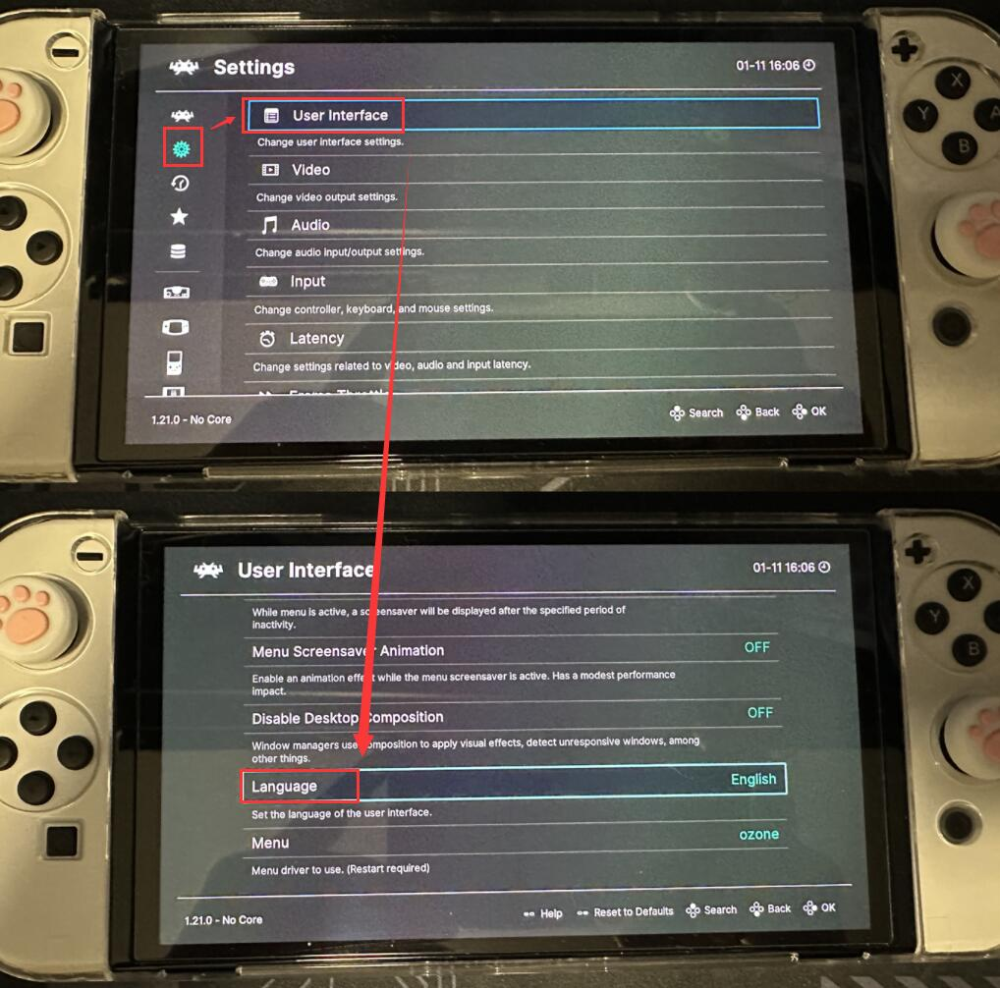
但是 RA 对中文支持不太好，汉化程度只有 75% ~ 95% ，而且刚切换时会出现一些字乱码看不到：
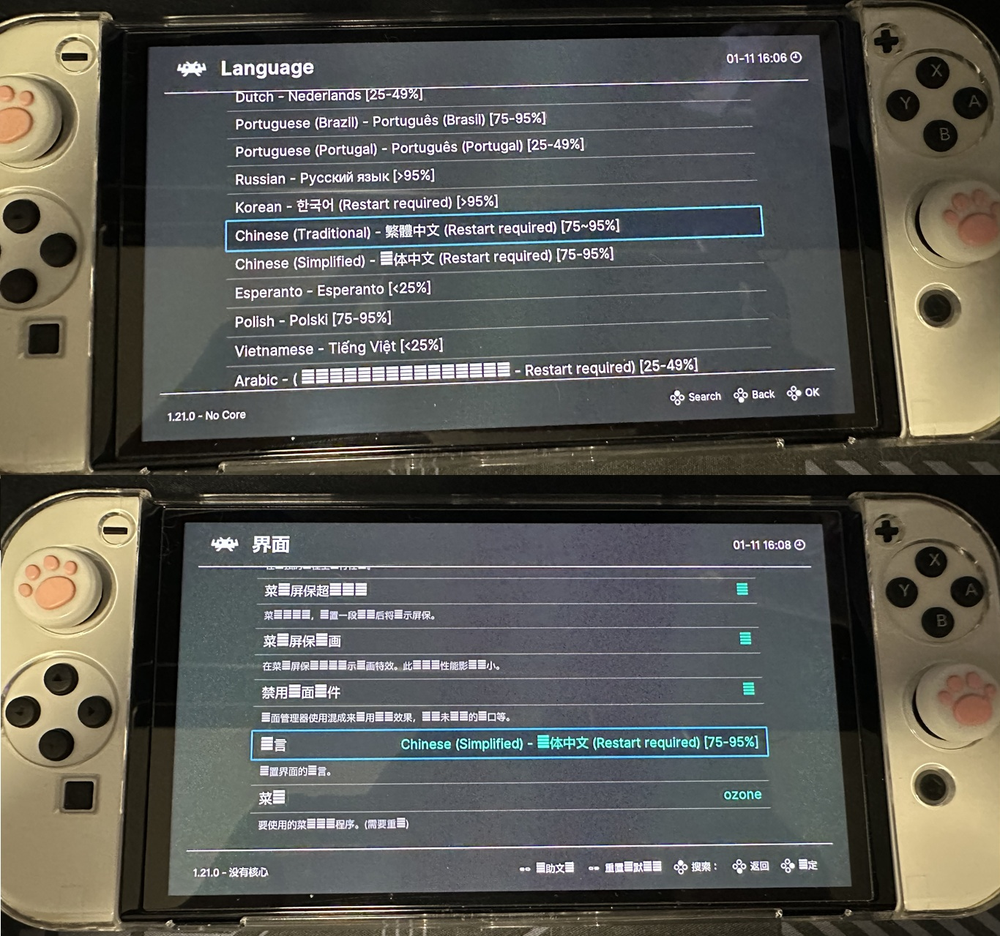
解决方法也很简单：切换中文后，按 Home 键回到首页，然后按 X 键关掉 RA，再重新打开 RA，就正常了。
虽然说汉化程度只有 75% ~ 95%，但实际上基本看不到乱码了：
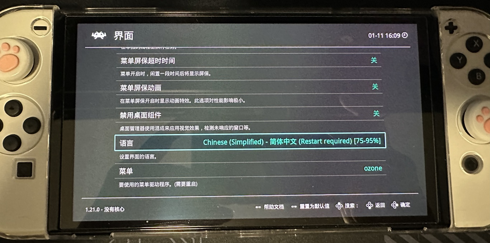
0x42 切换主题
默认的主题比较正式，没有那种复古掌机的感觉，内置了其他主题可以切换。
依次点击： 设置 -> 界面 -> 菜单。
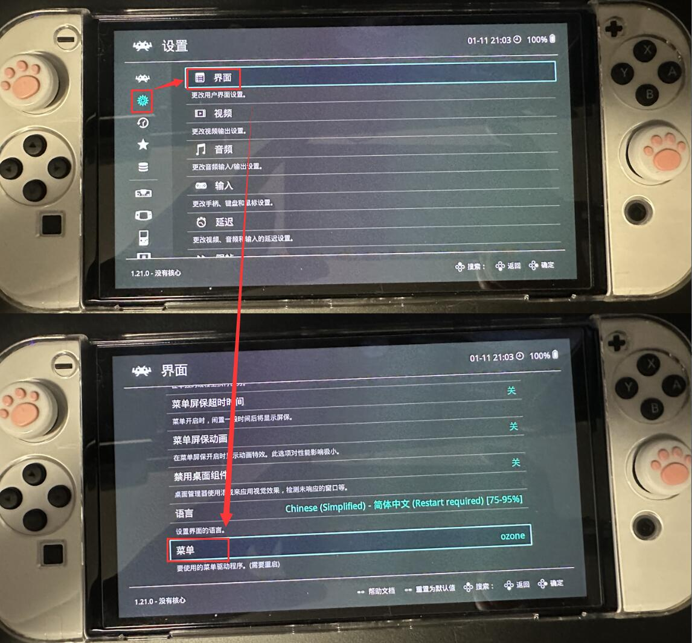
内置只有 4 个主题：
gluiozone: 默认rguixmb: 颇有 PSP 风格
推荐使用 xmb 主题：
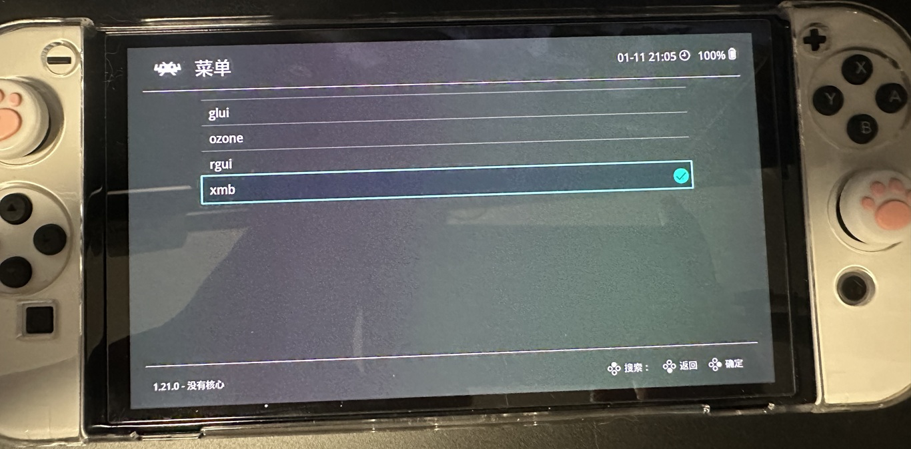
重启 RA 后就会变成类似 PSP 的掌机主题：

0x43 更多配置
基本通用的配置就是语言和主题，其他配置诸如游戏遮罩、着色器、超频等都属于个性化定制，喜欢抠细节的同学，可以到官网或者 B 站学习如何配置，本文不再展开。
这里提供 RA 的官方手册：
0x50 游戏添加
0x51 添加 roms 目录
在 SD 卡的根目录新建一个 roms 目录，用于存放游戏 rom 。
roms 下面在根据掌机类型，创建不同的子目录，如：
rom/FC: 用于存放小霸王游戏 rom，*.nes类型rom/GBC: 用于存放 GB 游戏 rom，*.gb/gbc类型rom/GBA: 用于存放 GBA 游戏 rom，*.gba类型rom/NDS: 用于存放 NDS 游戏 rom，*.nds类型rom/PSP: 用于存放 PSP 游戏 rom，*.iso类型rom/PCE: 用于存放 NEC 游戏 rom，*.pce类型
然后把自己喜欢玩的游戏放进去对应的子目录即可：
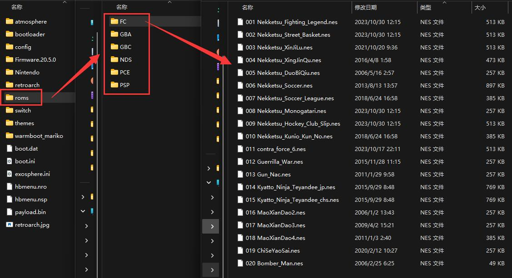
这里注意几点：
- 目录位置和名称不是绝对的，自己喜欢就就好
- RA 不支持中文目录/文件名，否则无法识别（先使用英文/拼音，下文会指引如何修改为中文）
- RA 在扫描 roms 时会根据文件名排序，，所以 rom 文件名称建议增加 001、002 等前缀序号，方便找到游戏
0x52 设置 roms 目录
把游戏放到 roms 后，回到 Switch 的 RA 。
依次点击： 设置 -> 文件夹 -> 开始文件夹。
选择刚刚在 SD 卡中创建的 roms 目录： /roms
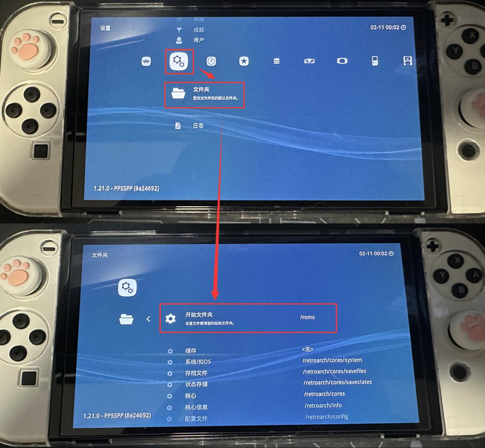
设置 roms 的开始文件夹，可以方便后面扫描游戏列表。
0x53 扫描游戏列表
现在可以根据 roms 分类好的游戏目录，依次扫描到 RA 里面了。
依次点击： 菜单 -> 导入 -> 手动扫描。
注意不要选第一项 “扫描文件夹”，虽然是自动扫描，但它只能根据 rom 的文件名匹配 RA 内置的数据库，问题是我们的 rom 都是改过名字的，也不知道 RA 内置了什么名字，所以 99% 都不会扫描到任何游戏。
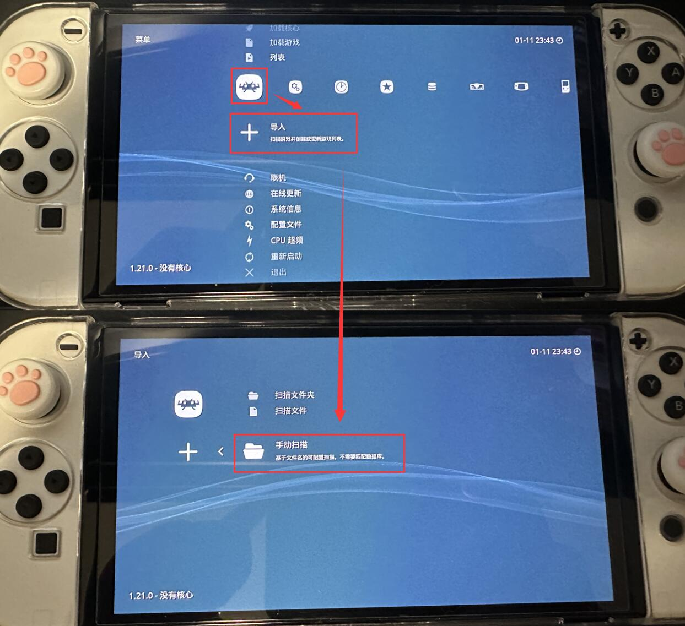
现在进入【手动扫描】的设置界面，这里以 PCE 系列游戏举例（FC、GBA 等都是一样的方法）。
点击 游戏文件夹，由于前面设置了 开始文件夹 为 /roms，所以直接可以看到 /roms 下面的子目录。
选择 PCE，然后点击 <扫描此文件夹>
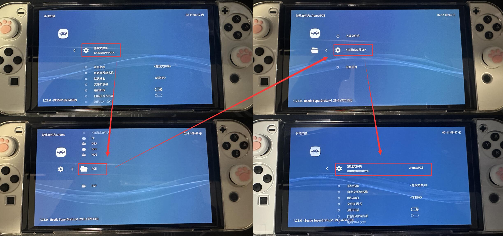
系统名称 不需要修改，默认是跟随扫描目录的名称，这里就是 PCE，记住它，后面有用。
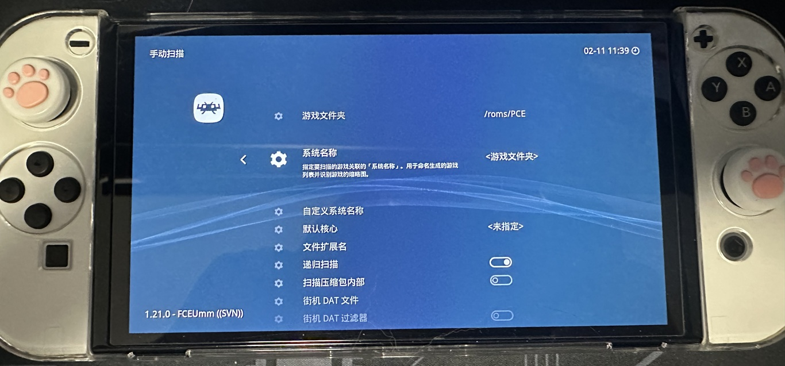
默认核心 就是选择这个目录下的 roms 默认用什么模拟器运行。
这里给出常用 roms 的推荐核心：
| rom 类型 | RA 核心 |
|---|---|
| FC | Nintendo - NES / Famicom (FCEUmm) |
| GB/GBC | Nintendo - Game Boy Advance (mGBA) |
| GBA | Nintendo - Game Boy Advance (mGBA) |
| NDS | Nintendo - DS (DeSmuME) |
| PSP | Sony - PlayStation Portable (PPSSPP) |
| PCE | NEC - PC Engine SuperGrafx (Beetle SuperGrafx) |
现在正在扫描 PCE 游戏，因此选择核心 NEC - PC Engine SuperGrafx (Beetle SuperGrafx) ：
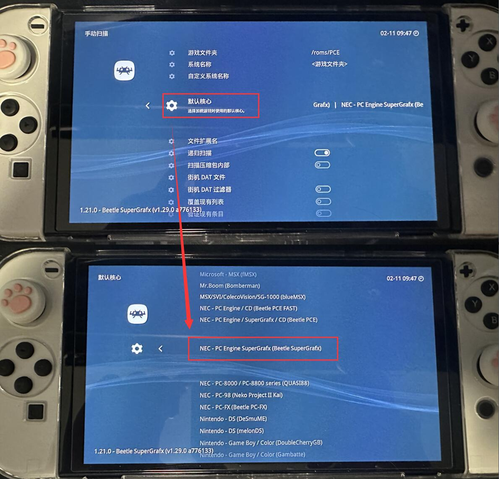
点击 开始扫描 后，等待左下角出现 扫描完成 提示即可：
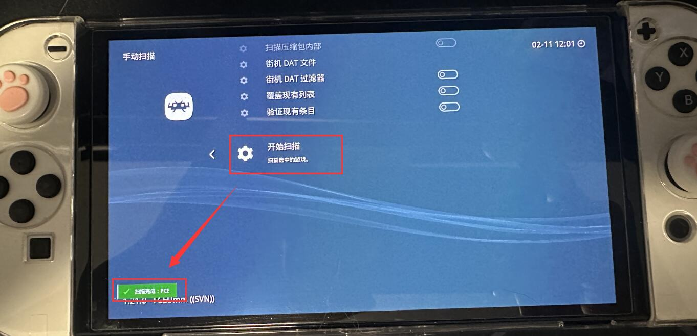
现在回退到 RA 最顶层菜单，往右边拉，就可以看到成功导入了 PCE 游戏列表：
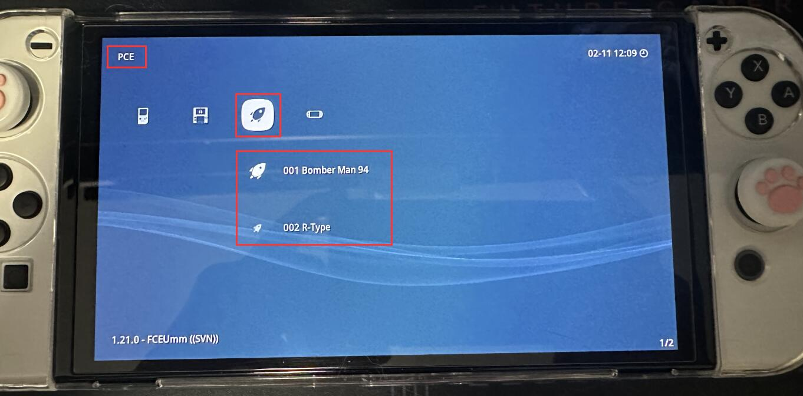
至此 PCE 游戏已经添加到 RA 里面了。
0x60 游戏设置
但是对比其他已经添加的 FC、GBA、PSP 等游戏列表：
不难发现 PCE 的游戏列表存在几个问题：
- 游戏列表的 Logo 是个小火箭，不好辨识这是 PCE 游戏
- 游戏名称是英文的，不好找游戏
- 游戏没有缩略图，不好找游戏
所以接下来需要丰富游戏列表的细节设置。
0x61 设置游戏列表 Logo
首先把游戏列表的默认小火箭 Logo 换掉。
这里要用到前面的两个相关设置：
- RA 主题切换到了
xmb - 扫描 PCE 游戏列表时，系统名称为
PCE（后面很多配置会用到）
修改的方法很简单，在 SD 卡打开 xmb 主题的图片资源目录，位置在 /retroarch/assets/xmb/monochrome/png。
如果是其他主题，则对应位置是
/retroarch/assets/${主题名称}/monochrome/png
里面存储了游戏列表会用到 Logo，默认是根据 系统名称 去关联对应的 Logo 的，当找不到系统名称时，就会使用默认 Logo :
default.png: 默认游戏列表本身的 Logodefault-content.png: 默认游戏列表内、每个游戏前面的 Logo
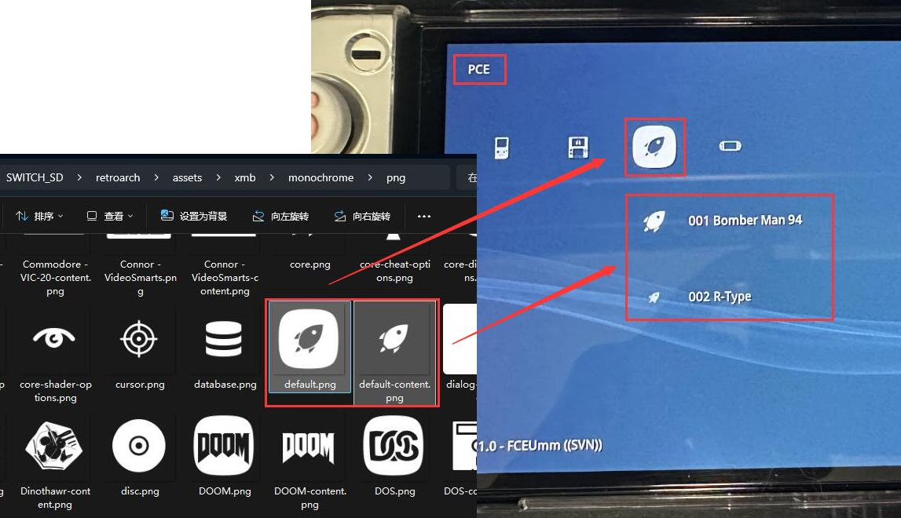
因此希望替换游戏列表 Logo 时，可以挑选比较相像的 Logo，复制并重命名为：
${系统名称}.png${系统名称}-content.png
当然也可以自己制作，注意图片格式必须为
*.png，大小为256x256。
譬如现在要修改 PCE 游戏列表 Logo，只需要把这两个图片放到目录下即可：
PCE.pngPCE-content.png
重启 RA 即可看到 PCE 游戏列表 Logo 已经自动替换了：
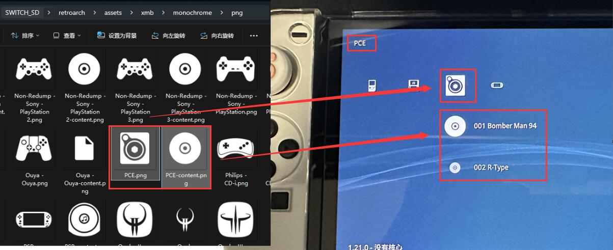
0x62 设置游戏中文名称
接下来的问题是，游戏名称不是中文：
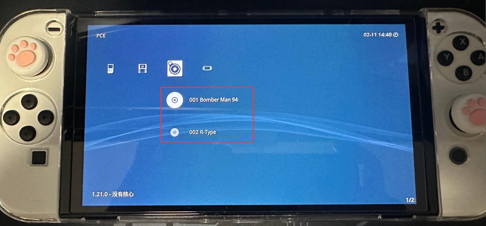
其实前面在扫描 PCE 游戏列表后，在 SD 卡的 /retroarch/playlists 游戏列表目录下，会对应生成一个 PCE.lpl 文件。
游戏列表文件的命名格式是
${系统名称}.lpl，系统名称就是前面扫描游戏列表时设置的
打开 PCE.lpl 可以看到是 json 格式的，在 items 下，每组配置都对应列表下的一个游戏：
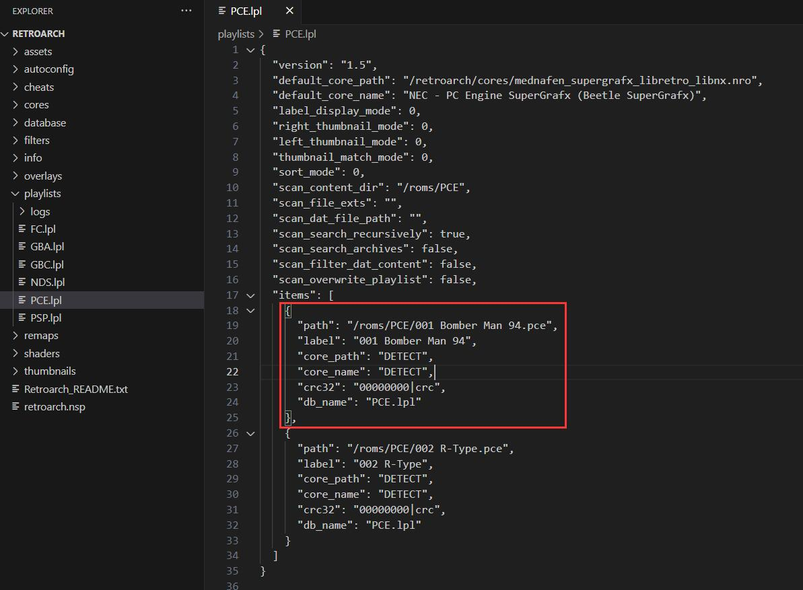
每个游戏的关键配置项为：
path: 该游戏 rom 文件的路径label: 该游戏在 RA 中显示的名称core_path: 运行该游戏用到的核心路径，DETECT表示使用默认值default_core_path，而默认值是扫描游戏列表时指定的core_name: 对应core_path的显示名称，DETECT表示使用默认值default_core_name
因此如果要在 RA 显示中文游戏名，只需要修改 label 即可：
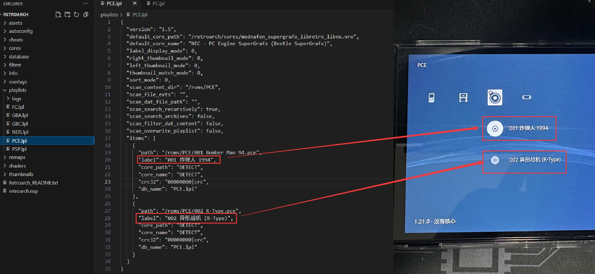
0x63 设置游戏缩略图
设置游戏缩略图，依然会涉及游戏列表配置文件 PCE.lpl。
这个配置文件的最开头有一个缩略图的模式开关 right_thumbnail_mode，它有 3 个枚举值：
| 枚举值 | 缩略图路径 | 说明 |
|---|---|---|
| 0 | /retroarch/thumbnails/${系统名称}/Named_Boxarts |
显示包装封面 |
| 1 | /retroarch/thumbnails/${系统名称}/Named_Titles |
显示起始屏幕 |
| 2 | /retroarch/thumbnails/${系统名称}/Named_Snaps |
显示游戏截图 |
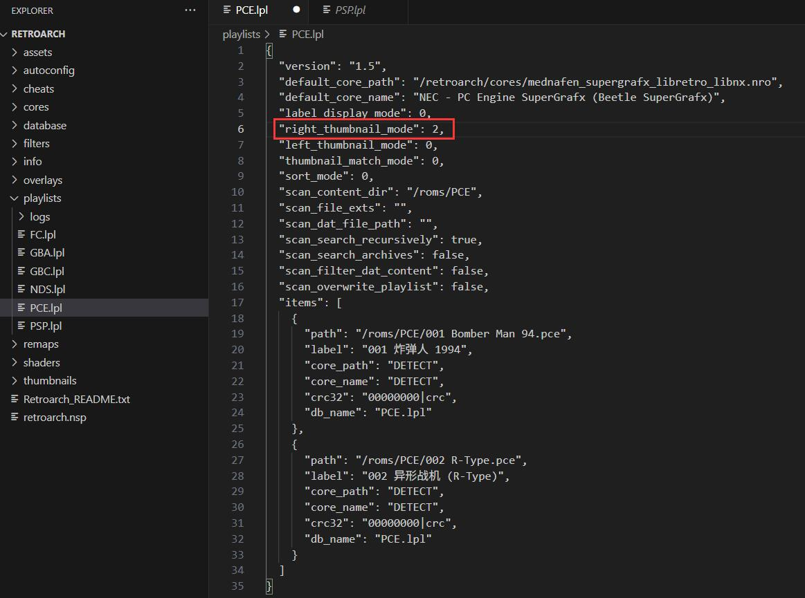
不少同学会选择使用 2: Named_Snaps，目的是可以把游戏截图目录指向该路径，然后就不需要网上找图片了。
但其实选择哪一个作为游戏显示的缩略图都可以，只需要保证在 /retroarch/thumbnails/${系统名称} 创建了对应的目录即可：
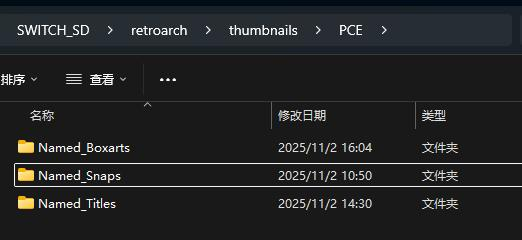
譬如这个例子中：
- 设置
right_thumbnail_mode为 2 - 对应创建目录
/retroarch/thumbnails/PCE/Named_Snaps - 在该目录下放入与对应 rom 同名的
*.png图片（必须是 png 格式）
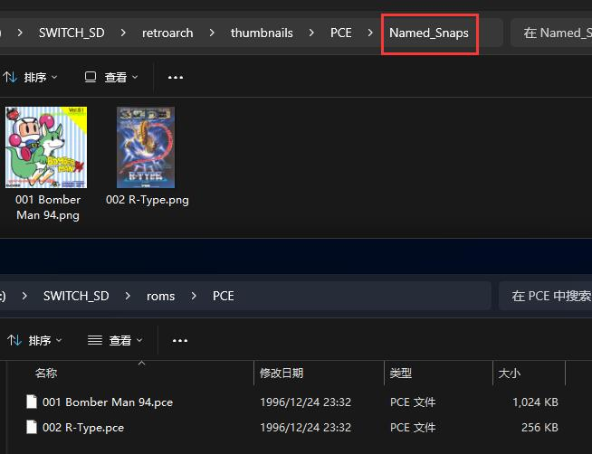
重启 RA 后，游戏列表就可以显示缩略图了：
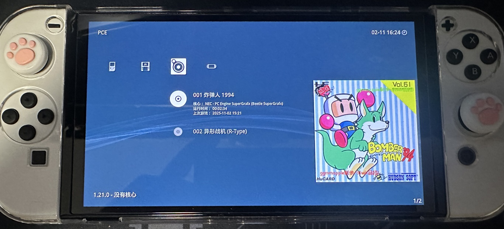
0x64 设置游戏独立核心（可选）
在 RA 中，同类游戏可能提供了多个核心。
某些 roms 可能用游戏列表的默认的核心无法运行，此时希望单独修改其核心，可以：
- 在 RA 列表点击该游戏，但是不要启动
- 设置核心关联
- 为该游戏选择独立核心
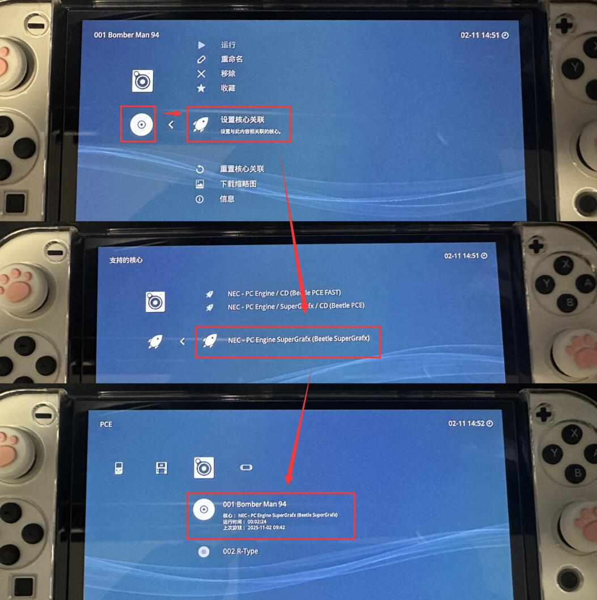
特别地，针对 3DS/NDS 的上下分屏太小的情况，可以在运行游戏后、呼出 RA 菜单，然后依次选择 核心选项 -> Screen -> Screen Layout 切换成左右分屏：
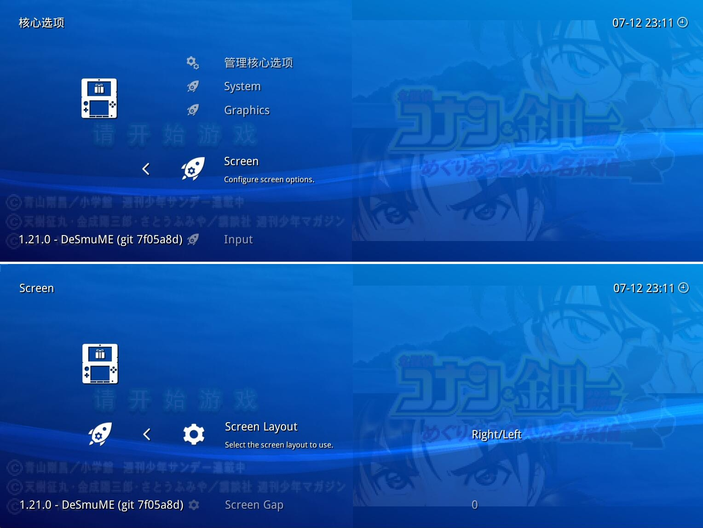
0x70 游戏时呼出菜单
很多同学启动游戏后，不知道怎么关闭游戏、快速存档/读档。
其实很简单，游戏中只要同时按住 - 和 + 可以就可以呼出 RA 菜单：
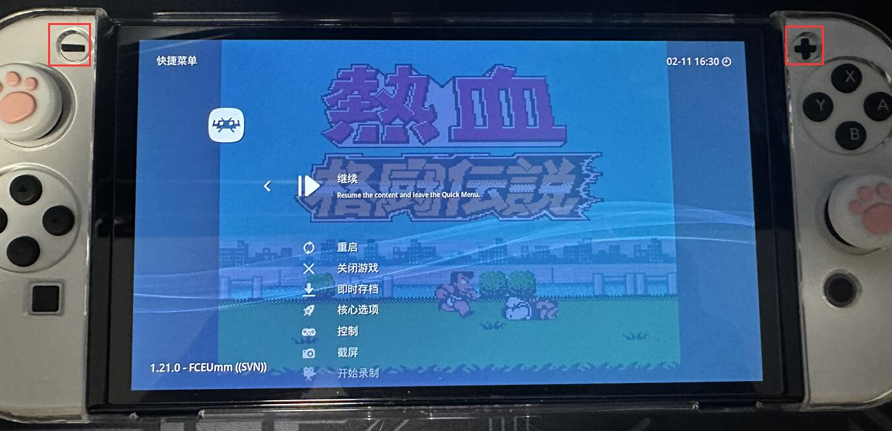
0xF0 附：精选 Roms
最后提供我个人收藏的 Rom 精选集：
这些都可以放到 Switch RA 里面玩，重新感受一下我们的童年。